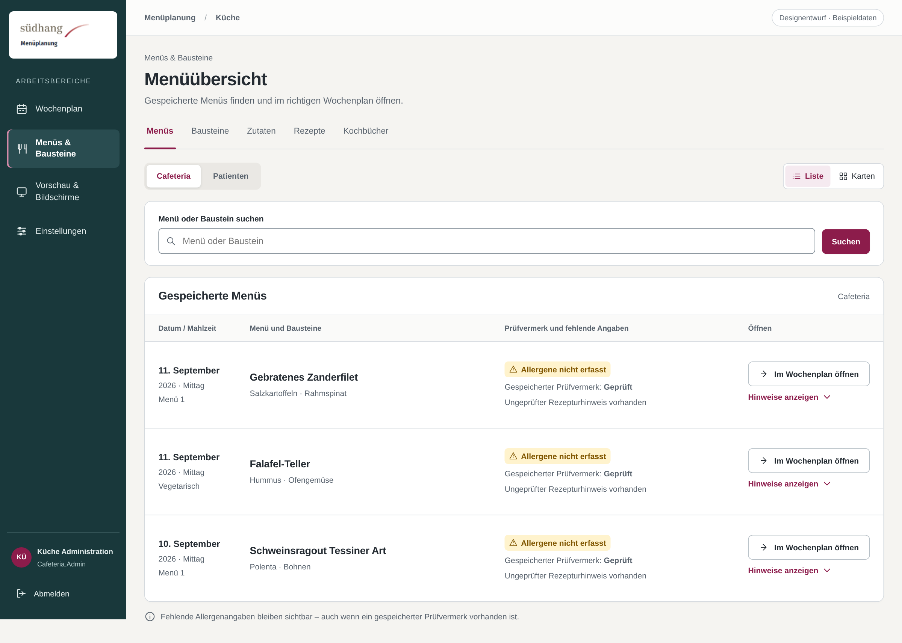
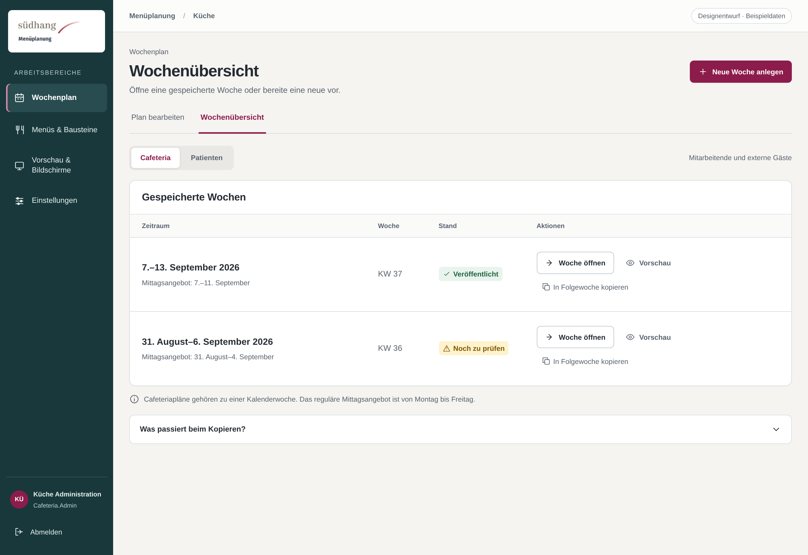
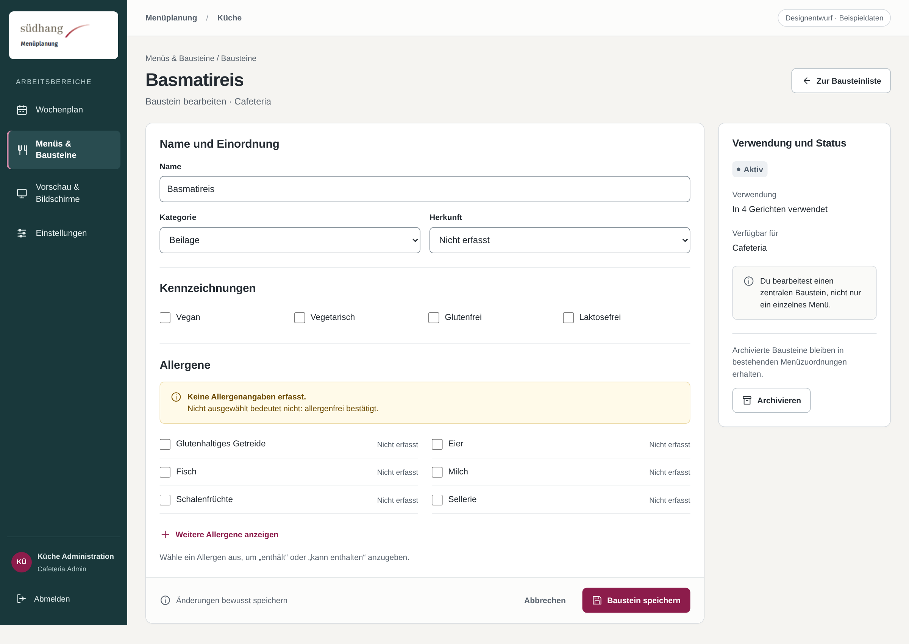
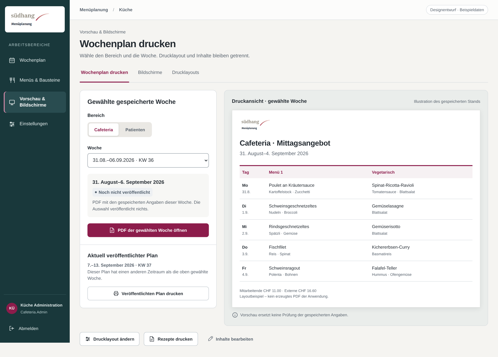
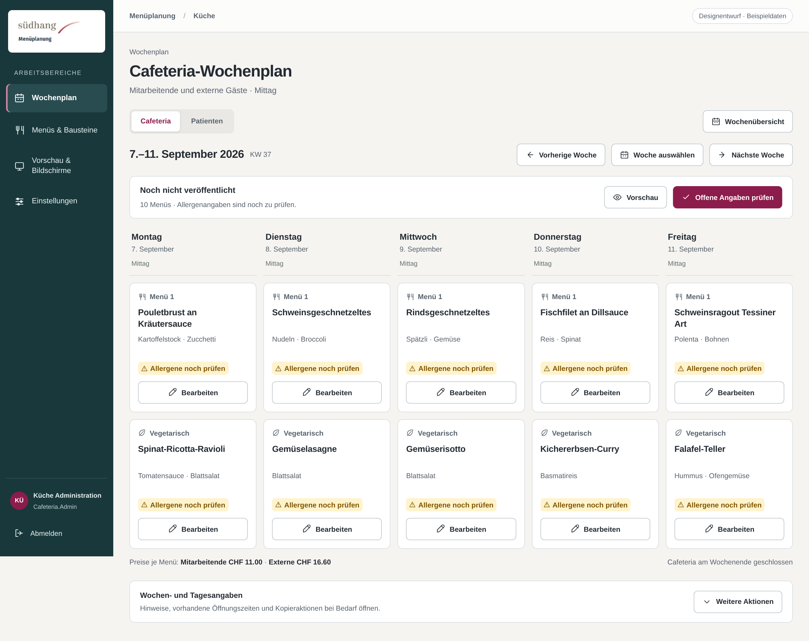
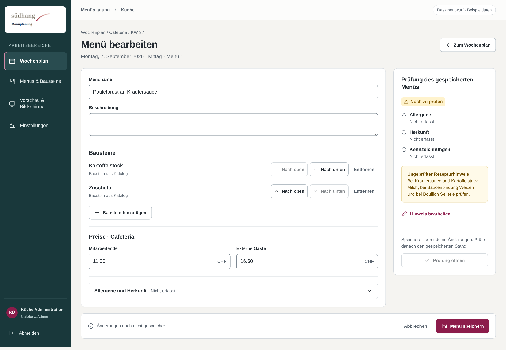
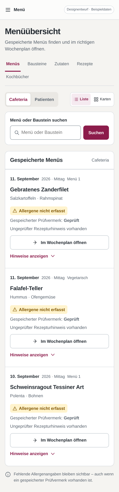
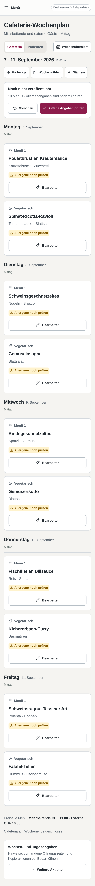

{kind=link}
R1
Menüübersicht
Entwurf
Liste, Prüfvermerk und fehlende Angaben getrennt; direkter Weg in den Wochenplan.
Acht neue Sollentwürfe. Klare Arbeitsbereiche, verständliche Aufgaben und ein gemeinsames Südhang-Erscheinungsbild. Keine Aufnahmen der laufenden Anwendung.

Liste, Prüfvermerk und fehlende Angaben getrennt; direkter Weg in den Wochenplan.

Gespeicherte Wochen zuerst; neue Woche als bewusste Aktion statt permanentem Formular.

Klar gegliederte Stammdaten, eindeutige Allergenangaben und getrenntes Archivieren.

Gewählte gespeicherte Woche und veröffentlichter Plan mit unterschiedlichen Zeiträumen.

Fünf Tage, zwei Menüarten, eine Wochensteuerung; keine zusätzlichen Bild- oder Menüfunktionen.

Vollständige Editorseite, kompakte Bausteine, ein Speicherbutton und Prüfung des gespeicherten Stands.

390 × 844 CSS-Pixel; Langaufnahme der ganzen Seite. Hier ist nur der obere Ausschnitt zu sehen.

390 × 844 CSS-Pixel; Langaufnahme der ganzen Seite. Hier ist nur der obere Ausschnitt zu sehen.